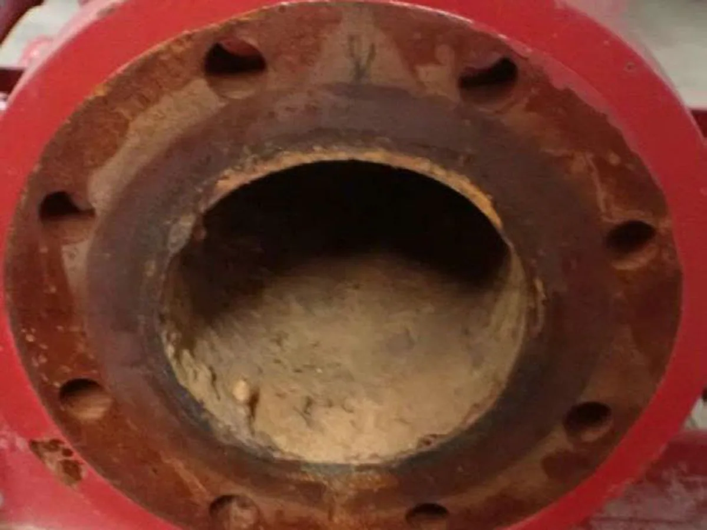
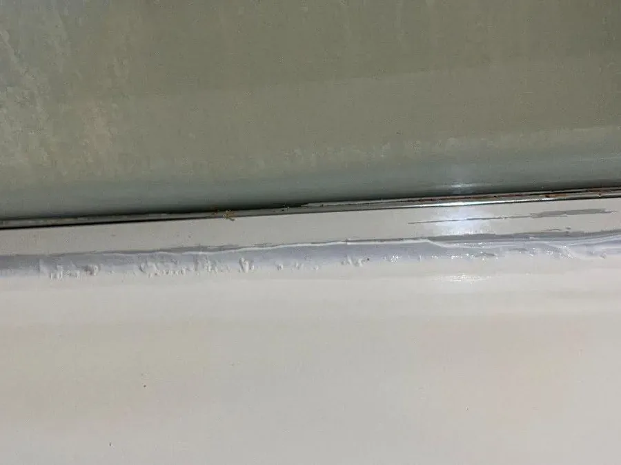
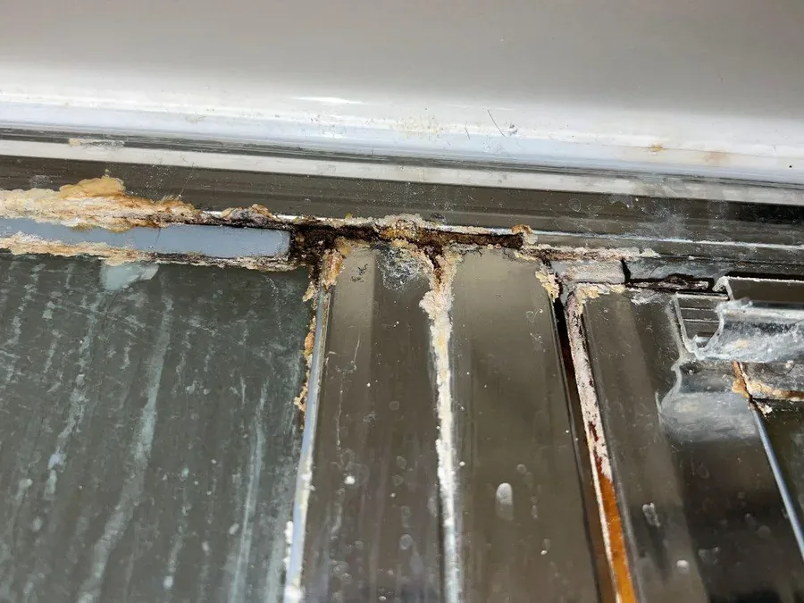

Descale lines and fixtures, acid-free.
Water lines, fixtures, water heaters, and drains cleared of scale and calcium without muriatic acid.
Where VertKleen fits in Plumbing.
Calcium, scale, and rust in supply lines, fixtures, and water heaters are usually attacked with muriatic acid or CLR. VertKleen Descaler clears the same buildup acid-free and fin- and metal-safe, and HCR handles heavier rust and passivation, so plumbing work stays safe in occupied buildings.
See the proof
What Plumbing buyers replace first.
Water lines, fixtures, heaters, and drains need scale removal without muriatic acid handling inside occupied buildings.
Bundle: Descaler for calcium and scale, HCR for heavier rust and passivation, Neutral for sensitive equipment cleaning.
VertKleen products for Plumbing.
Drop-in replacements for the hazardous chemistry this work usually relies on.
VertKleen on Plumbing sites.
Real jobs pulled straight from the VertKleen field library.



Take Plumbing to zero hazard.
Pick the path that fits. Every request routes to the MASEST team by vertical, product, and volume.